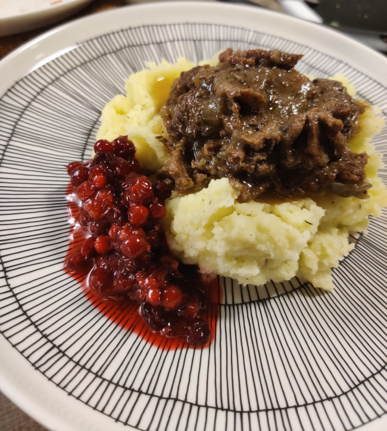

Hirvenkäristys
Suussa sulavaa oluessa haudutettua hirvenkäristystä.
Hirvenkäristys (noin 3 annosta)
- noin 300g grammaa pakastettua hirvenlihaa
- punasipuli
- 3dl vaaleaa laageria
- mausteet (suolaa ja mustapippuria maun mukaan ja 2-3 laakerinlehteä.)
Perunamuusi
- noin puoli kiloa perunaa
- reilu nokare voita
- reilu löräys maitoa
- mausteet (suolaa maun mukaan, vapaaehtoisesti esim valkosipuli jauhetta ja/tai timjamia)
Valmistus:
- Leikkaa liha ohuiksi siivuiksi ja paista pienissä erissä keskikovalla lämmöllä padan pohjalla.
- Kuori ja pieni punasipuli, kuullota padassa muutaman minuutin ajan.
- Lisää liha takaisin pataan, kaada olut päälle. Jos kaikki lihat eivät peity, lisää vettä.
- Hauduta pataa keskilämmöllä noin 1,5 - 2 tuntia. Tarkista välillä ja lisää nestettä tarvittaessa.
